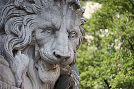

Grenoble n'est pas juste une ville.

L’histoire de Grenoble couvre plus de 2 000 ans.
À l'époque gallo-romaine, le bourg gaulois porte le nom de Cularo puis de Gratianopolis et voit son importance accrue lorsque les Comtes d’Albon la choisissent au début du XIe siècle comme capitale de leur principauté, le Dauphiné.
Avec ce nouveau statut, puis trois siècles plus tard l'annexion du Dauphiné au royaume de France, l'économie de Grenoble s'est développée pour devenir une ville parlementaire et militaire, gardienne de la frontière avec les États de Savoie.
Ses habitants se distinguent lors de chaque événement que connaît la province, que ce soit lors des guerres d'Italie, de la Révolution française ou durant la Seconde Guerre mondiale.
Grenoble voit son importance s’accroître par son développement industriel.
Celui-ci commence véritablement au XVIIIe siècle avec la ganterie et s’accentue dans la deuxième partie du XIXe siècle, avec la découverte des possibilités de la Houille Blanche, illustrées par l'organisation de l'exposition internationale de la houille blanche en 1925.
Mais Grenoble connaît sa plus forte croissance durant les Trente Glorieuses, qui coïncident avec la tenue des jeux olympiques d'hiver de 1968, symbolisant cette période de grands bouleversements pour la ville. Son développement se poursuivant, Grenoble est aujourd’hui un centre important de recherche scientifique pour l'Europe.
Source